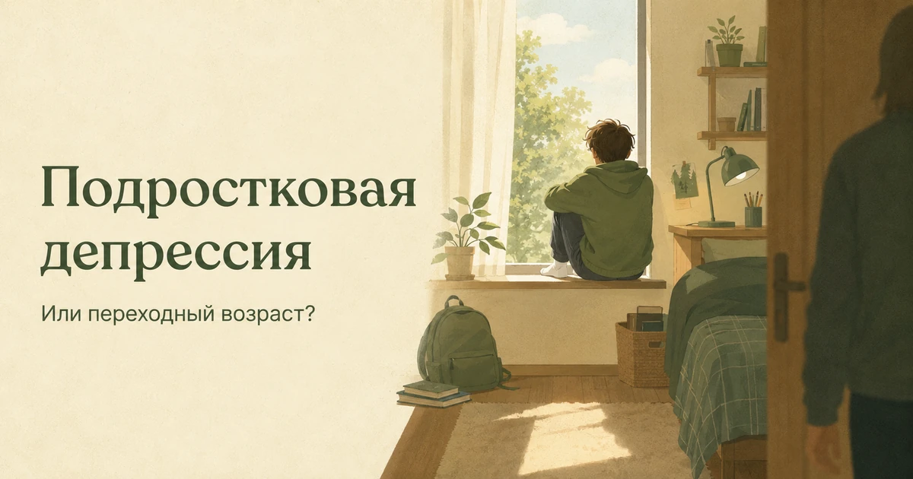
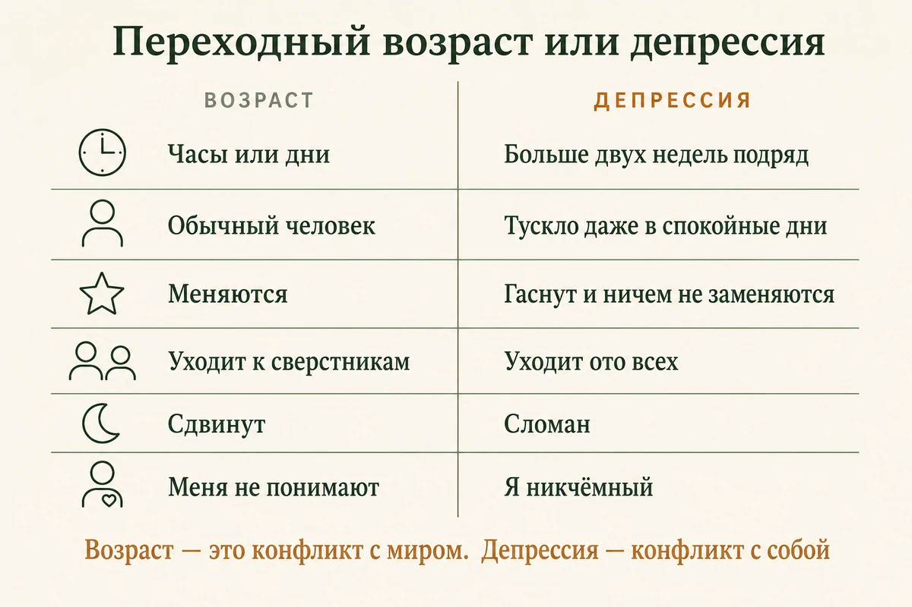
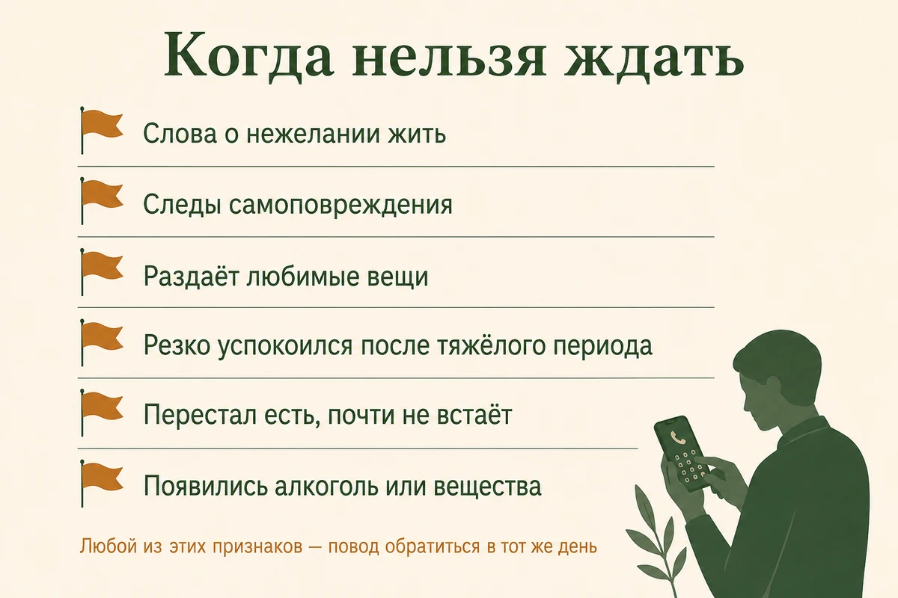
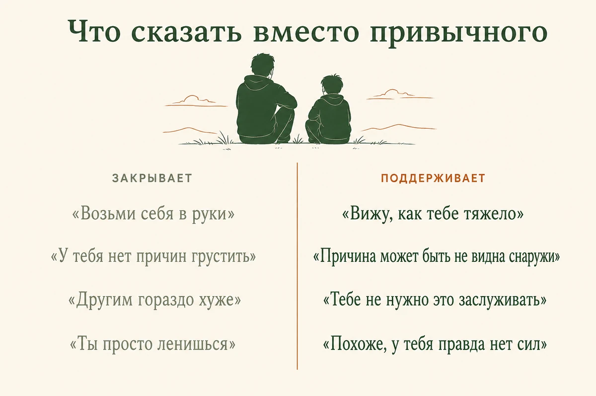

Главная → Блог → Подростковая депрессия
Подростковая депрессия: как отличить от переходного возраста
Обновлено: 01.09.2026 · 19 минут чтения

Главное различие простое: переходный возраст меняет настроение, депрессия меняет человека. Подростковые перепады проходят за часы или дни, и между ними ребёнок остаётся собой — смеётся, чем-то увлечён, куда-то собирается. При депрессии сниженное настроение или постоянная раздражительность держатся почти каждый день дольше двух недель, а вместе с ними уходит способность чему-либо радоваться. И ещё одна вещь, из-за которой её массово пропускают: у подростков депрессия проявляется не только грустью — часто это раздражительность, злость и то, что дома читают как «испортившийся характер». Ниже — по каким признакам её узнают, как поговорить с тем, кто закрылся, что делать при словах «не хочу жить» и к кому идти.
- Переходный возраст или депрессия: главное различие
- 9 признаков депрессии у подростка
- Почему её принимают за плохой характер
- Что её запускает
- Признаки, при которых нельзя ждать
- Как поговорить с тем, кто закрылся
- Как спрашивать про мысли о смерти
- Что делать родителю: 8 шагов
- Фразы, которые делают хуже
- Как лечат подростковую депрессию
- Если подросток отказывается от помощи
- Школа и нагрузка на время лечения
- Как выдержать это родителю
- К кому идти и что доступно бесплатно
- Частые вопросы
Переходный возраст или депрессия: главное различие
Смотрите не на силу вспышки, а на длительность и на то, сколько жизни она захватила. Подросток и должен быть эмоциональным, спорить, отделяться от родителей и запираться в комнате — это работа возраста, а не поломка. Вопрос в другом: остаётся ли между вспышками нормальная жизнь.
| Признак | Переходный возраст | Депрессия |
|---|---|---|
| Длительность | Часы или дни, волнами | Почти каждый день дольше двух недель |
| Между вспышками | Обычный человек: шутит, увлечён, строит планы | Ровный минус: тускло даже в спокойные дни |
| Интересы | Меняются: старое надоело, появилось новое | Гаснут и ничем не заменяются |
| Друзья | Уходит от родителей к сверстникам | Уходит ото всех, включая друзей |
| Сон | Сдвинут: поздно ложится, поздно встаёт | Сломан: не засыпает, просыпается ночью или спит по 12 часов без отдыха |
| Учёба | Колеблется, «забил» на отдельные предметы | Падает по всем, не может сосредоточиться |
| О себе | «Меня никто не понимает» | «Я никчёмный», «лучше бы меня не было» |
| Реакция на хорошее | Радуется тому, что любит | Не радует даже то, чего ждал |
Простой ориентир: переходный возраст — это конфликт с вами, депрессия — это конфликт с собой. В кризисе возраста подросток спорит и отвоёвывает автономию, но его собственная жизнь при этом продолжается. При депрессии конфликты могут никуда не деться — страдает другое: интересы, отношения, сон, учёба и способность получать удовольствие.

9 признаков депрессии у подростка
Две недели почти ежедневных симптомов — это диагностический ориентир, а не правило «сначала подождите две недели». Если состояние изменилось резко, мешает учёбе и обычной жизни или появились мысли о смерти и самоповреждении, обращаться нужно сразу. Отдельно взятый пункт из списка ничего не доказывает — смотрят на сочетание и на перемену по сравнению с тем, каким подросток был раньше.
- Раздражительность и злость вместо грусти. Взрывается на ровном месте, огрызается, хлопает дверью. Именно этот признак чаще всего и принимают за характер.
- Потеря интереса. Забросил то, что любил: спорт, рисование, игру, компанию. Не заменил ничем.
- Уход в комнату. Перестал выходить, не зовёт друзей, не отвечает на сообщения, всё общение свёл к экрану.
- Сломанный сон. Не может уснуть до трёх ночи, просыпается среди ночи или спит по двенадцать часов и всё равно разбитый.
- Изменился аппетит и вес. Перестал есть или ест постоянно; заметное изменение веса за пару месяцев.
- Постоянная усталость. «Нет сил» на всё, включая душ и уборку в комнате. Это не лень, а симптом.
- Падение успеваемости и невозможность сосредоточиться. Не может дочитать страницу, забывает задания, съехал по всем предметам сразу.
- Самоуничижение и вина. «Я тупой», «я всё порчу», «вам было бы лучше без меня». Последняя фраза — уже красный флаг.
- Повторяющиеся телесные жалобы. Головные боли, боли в животе, тошнота. Если обследование ничего не находит, это не значит, что симптом выдуман: тело так реагирует на длительный стресс и подавленность.
Почему её принимают за плохой характер
Потому что подростковая депрессия редко выглядит как печальный человек, который плачет. Она выглядит как грубость, лень и «сидит в телефоне». Родитель видит поведение, которое злит, и реагирует на поведение — наказаниями, лекциями, отбиранием телефона. Мысль «ему плохо» приходит последней, потому что ничего похожего на «плохо» подросток не показывает.
Мешают ещё три вещи. Во-первых, возрастная норма действительно широка, и любой признак поодиночке легко объяснить: не спит — потому что игры, огрызается — потому что подросток, забросил секцию — потому что «перерос». Во-вторых, подростки хорошо маскируются: в школе и при чужих держат лицо, а разваливаются дома, поэтому «в школе всё нормально» ничего не опровергает. В-третьих, само состояние мешает попросить о помощи: депрессия говорит человеку, что он не заслуживает возни с собой.
Отсюда и типичный сценарий: месяцами идёт война с поведением — за грубость, за оценки, за телефон, — и всё это время никто не проверяет, нет ли за поведением состояния, с которым подросток не справляется.
Что её запускает
У депрессии не бывает одной причины — обычно совпадает несколько. Знать их полезно не чтобы найти виноватого, а чтобы понимать, где сейчас давит.
- Биология возраста. Перестройка организма и мозга сама по себе делает настроение менее устойчивым, а реакцию на стресс — более резкой.
- Наследственность. Депрессия в семье повышает вероятность, но не предопределяет её.
- Положение среди сверстников. Травля, изоляция, разрыв дружбы, публичный позор в чате. Для подростка это не мелочь, а разрушение социального мира.
- Учебное давление. Экзамены, ожидания родителей, ощущение, что любая ошибка решает судьбу.
- Что происходит дома. Развод, конфликты, болезнь близкого, переезд, потеря. Отдельно — обстановка, где чувства не принимают.
- Тяжёлый опыт. Насилие, унижение, утрата — в том числе давние; о следах такого опыта подробнее в статье про детские травмы.
- Сон и вещества. Хронический недосып и алкоголь с веществами не просто сопутствуют состоянию, а прямо его усугубляют.
- Сезон. Часть спада может приходиться на сезонное снижение настроения, которое накладывается на учебный год.
Отдельно про родительскую вину: искать, «где я недоглядел», — почти неизбежный этап, но бесполезный. Депрессия возникает и в тёплых, внимательных семьях. Полезнее вопрос не «кто виноват», а «что сейчас можно снять с его плеч».
Признаки, при которых нельзя ждать
В этих случаях помощь нужна сегодня, а не после каникул и не «когда освободится хороший специалист».
- прямые или косвенные слова о нежелании жить: «я устал от всего этого», «вам будет лучше без меня», «скоро это закончится»;
- следы самоповреждения — порезы, ожоги, следы на руках, ношение длинных рукавов в жару;
- любые признаки подготовки: прощальные сообщения, раздача важных вещей, слова о том, что «скоро всё закончится», поиск способов причинить себе вред, конкретный план;
- резкое необъяснимое успокоение после долгого тяжёлого периода — само по себе оно ничего не доказывает, но вместе с любым пунктом выше это повод насторожиться;
- подросток перестал есть или почти не встаёт;
- появились алкоголь или вещества;
- он говорит о голосах или о том, что за ним следят;
- вы просто чувствуете, что происходит что-то серьёзное, — это достаточное основание, чтобы обратиться.

Как поговорить с тем, кто закрылся
Часто полезнее несколько коротких спокойных разговоров, чем попытка выяснить всё за один вечер. Подросток, которому плохо, редко выдаёт всё сразу: он проверяет, безопасно ли, и открывается порциями.
- Говорите боком. В машине, на прогулке, за мытьём посуды, поздно вечером в темноте. Многим подросткам такой разговор даётся легче: не нужно сидеть напротив взрослого и выдерживать прямой взгляд.
- Начните с наблюдения, а не с вопроса. «Я вижу, что последние недели тебе тяжело. Я не ругаться, мне правда важно понять». Вопрос «что с тобой?» в лоб чаще всего получает «ничего».
- Назовите конкретное, что вы заметили. «Ты почти перестал выходить из комнаты», «ты не спишь ночами», «ты бросил рисовать». Конкретика показывает, что вы смотрели, а не ищете повод отчитать.
- Не спорьте с тем, что услышали. Даже если причина кажется вам пустяком, для него она реальна. «Понял. Это правда тяжело» — достаточно.
- Не обещайте того, чего не сможете. Особенно «я никому не скажу»: если речь о безопасности, обещание придётся нарушить. Честнее: «Я не буду ничего делать за твоей спиной, но если станет опасно, я подключу помощь — и скажу тебе об этом».
- Дайте выход, если он не готов. «Можешь не отвечать сейчас. Я рядом, и я вернусь к этому разговору через пару дней». И действительно вернитесь.
- Уберите оценку из своей реакции. Ужас, слёзы и «как ты мог такое подумать» заставляют подростка защищать вас от собственного состояния — и он замолкает.
— Ты в порядке?
— Да.
— Ладно. Я всё равно скажу, что вижу: ты почти месяц не выходишь из комнаты и не спишь. Я не ругаюсь и не собираюсь ничего отбирать. Мне важно, чтобы тебе стало легче.
— Мне не нужна помощь.
— Понял. Тогда просто знай: если захочешь поговорить — в любое время, даже в три ночи. И я на этой неделе схожу к специалисту сам, чтобы понимать, как тебе помочь.
Как спрашивать про мысли о смерти
Спрашивать нужно прямо, и это не подталкивает подростка к действию. Многие родители боятся «вложить мысль в голову» — но если этих мыслей нет, вопрос ничего не создаст, а если есть, то подросток впервые услышит, что об этом можно говорить вслух и его не сочтут сумасшедшим. Молчание вокруг темы не защищает, а оставляет его наедине с ней.
Как это сформулировать:
- «Тебе бывает так тяжело, что не хочется жить?»
- «У тебя бывают мысли о том, чтобы причинить себе вред?»
- Если ответ «да»: «Ты думал о том, как именно? Ты что-то для этого готовил?» — наличие конкретного плана означает, что помощь нужна немедленно.
- «Что тебя удерживает?» — этот вопрос помогает найти опору, за которую можно держаться дальше.
Что делать после такого разговора: не оставлять подростка одного, убрать из доступа лекарства, острое и всё, что может быть опасно, и в тот же день связаться с врачом или кризисной службой. Не берите с него обещание «больше так не думать» — это невыполнимо; вместо этого договоритесь о простом сигнале, которым он даст знать, что накрывает.
Что делать родителю: 8 шагов
- Перестаньте воевать с поведением. Пока не понятно, что происходит, отложите санкции за грубость и оценки. Наказание за симптом усиливает симптом.
- Соберите факты. Когда началось, что изменилось, как спит, что ест, с кем общается, что было в этот период в школе и дома. Это понадобится специалисту и уберёт спор «тебе кажется».
- Покажите педиатру. Усталость, разбитость и боли бывают следствием телесных состояний — врач решит, нужны ли обследования и какие.
- Обратитесь к специалисту, не дожидаясь «дна». Раннее обращение делает эпизод короче. Порог «две недели» — это не срок ожидания, а срок, после которого точно пора.
- Восстановите базу. Сон в одно время, еда, дневной свет, движение и меньше ночного экрана. Само по себе это не лечит депрессию, но без этого не работает ничего остальное.
- Снимите часть нагрузки. Уберите то, что можно убрать: репетиторов сверх нужного, кружки «для будущего», ожидание прежних оценок. Освободите место для восстановления.
- Оставайтесь рядом без давления. Совместные дела без разговоров по душам — приготовить еду, съездить куда-то, посмотреть что-то вместе — работают лучше, чем требование открыться.
- Замечайте маленькое. Встал, поел, вышел на улицу — это и есть прогресс на этом этапе, и его стоит называть вслух без пафоса.
Фразы, которые делают хуже
Почти все они произносятся из желания подбодрить, а слышатся как «твоё состояние ненастоящее».
| Не надо | Лучше |
|---|---|
| «Возьми себя в руки» | «Я вижу, как тебе тяжело. Давай разбираться вместе» |
| «У тебя нет причин грустить» | «Причина может быть не видна снаружи — это не делает её выдуманной» |
| «Вот в моё время…» | «Расскажи, как это для тебя» |
| «Просто перестань сидеть в телефоне» | «Хочешь, выйдем пройтись? Можно молча» |
| «Другим гораздо хуже» | «То, что тебе плохо, не нужно ничем заслуживать» |
| «Ты просто ленишься» | «Похоже, у тебя правда нет сил. Это бывает симптомом» |
| «Не выдумывай, ты не в депрессии» | «Давай сходим к специалисту и разберёмся» |

Как лечат подростковую депрессию
Основа помощи — психологические методы, а не таблетки. Британское руководство NICE прямо указывает: при лёгкой депрессии у детей и подростков антидепрессанты не используют как начальное лечение. При умеренной и тяжёлой депрессии в возрасте 12–18 лет основным методом остаётся индивидуальная когнитивно-поведенческая терапия — а лекарственное лечение врач добавляет или не добавляет к ней в зависимости от тяжести состояния, возраста, рисков и обстоятельств. Применяются и подходы, направленные на отношения подростка с близкими и сверстниками. Часть работы обычно идёт с родителями — это не признак того, что вы что-то сделали не так, а способ изменить обстановку, в которой подросток живёт каждый день.
Про лекарства родителю важно знать несколько вещей. Назначает их только врач, у подростков подбор имеет свои особенности, и первые недели приёма требуют более внимательного наблюдения — об этом врач предупреждает отдельно и просит сообщать об изменениях состояния. Эффект оценивают не через три дня, а через недели. Самостоятельно менять дозу или прекращать приём нельзя: схему отмены определяет назначивший врач. Названий и доз вы здесь не найдёте намеренно: самолечение в этой теме опасно, а «попробовать то, что помогло знакомым» — тем более.
Сроки: при своевременной помощи заметное улучшение обычно приходит в течение нескольких недель или месяцев, но восстановление идёт неровно — откаты после хороших дней это нормальная часть процесса, а не признак, что лечение не работает.
Если подросток отказывается от помощи
Отказ почти никогда не означает «мне не нужно». За ним обычно стоит что-то из этого:
- страх, что его признают ненормальным и это «на всю жизнь»;
- уверенность, что говорить бесполезно и никто не поймёт;
- опасение, что специалист перескажет всё родителям;
- ожидание нотаций и советов «взять себя в руки»;
- нежелание терять последний контроль над ситуацией, когда решают уже всё за него;
- стыд: «я не настолько плох, чтобы меня лечили».
Ультиматум здесь работает плохо: подросток придёт, промолчит сорок минут и получит подтверждение, что это бесполезно. Если он согласен только на специалиста, который ему понравится, — это рабочий вариант, а не каприз: соглашайтесь на пробную встречу и на смену специалиста, если контакта не вышло. Отношения с тем, кто помогает, важнее его регалий.
- Уберите слово «лечиться» и назовите конкретную задачу: «чтобы наладить сон», «чтобы разгрузить голову перед экзаменами».
- Дайте выбор там, где он возможен: какой специалист, очно или онлайн, идти одному или вместе, мужчина или женщина.
- Договоритесь о пробе: «сходим один раз, дальше решаешь ты». Первый визит ни к чему не обязывает.
- Разрешите не рассказывать вам содержание встреч. Конфиденциальность — то, ради чего многие подростки вообще соглашаются.
- Начните с себя: родитель может пойти к специалисту один, без ребёнка, и это часто самый быстрый способ сдвинуть ситуацию.
- Если есть угроза жизни, согласие подростка перестаёт быть решающим — здесь действуют взрослые.
Школа и нагрузка на время лечения
Учёба на время становится второстепенной, и это нормально. Требовать прежних оценок от человека, который не может дочитать страницу, — значит добавлять к состоянию ежедневное чувство провала.
- Поговорите с классным руководителем: не обязательно называть диагноз, достаточно сказать, что подросток проходит лечение и ему нужен щадящий режим.
- Обсудите сокращённую нагрузку, перенос контрольных, возможность отвечать письменно.
- Если он перестал ходить в школу совсем — это отдельная задача, и её разбирает статья о том, что делать, когда ребёнок отказывается идти в школу.
- Сохраните хоть какой-то контакт с одноклассниками: полная изоляция усугубляет состояние.
- Не переводите в другую школу в острый период — переезд в новую социальную среду сейчас не по силам.
Как выдержать это родителю
Депрессия подростка — это марафон для всей семьи, и родитель в нём выгорает первым. Страх, бессилие, злость на ребёнка и стыд за эту злость, вина — обычный набор, и он не делает вас плохим родителем.
- Разделите ответственность: лечение — задача специалиста, ваша часть — быть рядом и обеспечить условия. Вылечить его усилием воли вы не можете, и это не ваш провал.
- Договоритесь со вторым родителем о единой линии: разные требования усиливают тревогу подростка и разрушают вас обоих.
- Найдите, где выговариваться, кроме самого ребёнка, — он не должен нести ваш страх за него.
- Не отменяйте себя целиком: сон, еда, работа, один свой интерес. Это условие того, что вас хватит надолго.
- Если держитесь на пределе месяцами, проверьте себя на признаки выгорания, а чувство вины разберите отдельно: оно съедает силы, которые нужны на действия.
- Взрослому можно и нужно обратиться за помощью самому — в том числе чтобы понять, как разговаривать с ребёнком.
Если вы родитель и сами не справляетесь с тревогой, виной и бессилием — ИИ-психолог помогает разобраться именно с вашим состоянием и подобрать слова для завтрашнего разговора. Круглосуточно, анонимно и без записи. Для подростков сервис не предназначен и врача не заменяет.
Поговорить прямо сейчасК кому идти и что доступно бесплатно
Кто чем занимается:
- Клинический психолог или психотерапевт, работающий с подростками — основная работа с состоянием. С него разумно начинать при лёгком и умеренном.
- Детский или подростковый психиатр — при выраженном состоянии, самоповреждении, мыслях о смерти. Он оценивает необходимость лекарственного лечения и назначает его с учётом возраста, диагноза и рисков.
- Педиатр — исключить телесные причины усталости и болей.
- Школьный психолог — не лечит, но видит обстановку в классе и помогает согласовать щадящий режим.
Что доступно бесплатно в России: психоневрологический диспансер по месту жительства, городские психолого-педагогические центры, помощь по ОМС. Отдельно стоит сказать про страх «поставят на учёт»: сам по себе визит к психиатру не означает постановку на диспансерное наблюдение — что это такое на самом деле и какие бесплатные варианты есть, разобрано в справочнике помощи. Страх этой формулировки ежегодно удерживает семьи от обращения дольше, чем само состояние.
Частые вопросы
Как отличить подростковую депрессию от переходного возраста?
Смотрите не на отдельные вспышки, а на длительность и охват. Подростковые перепады настроения проходят за часы или дни, и между ними ребёнок остаётся собой: у него есть интересы, друзья, планы, он смеётся. При депрессии сниженное настроение или раздражительность держатся почти каждый день дольше двух недель, гаснет интерес к тому, что раньше нравилось, портятся сон и аппетит, падает успеваемость. Ключевой признак — не грубость, а исчезновение удовольствия.
Какие признаки депрессии у подростка?
Часто это раздражительность и злость, а не грусть, потеря интереса к прежним увлечениям, уход в комнату и в телефон, нарушения сна, изменение аппетита и веса, постоянная усталость, резкое падение успеваемости, разговоры о себе в духе «я никчёмный», повторяющиеся жалобы на головные боли и боли в животе. У подростков депрессия часто выглядит не как печаль, а как «испортился характер».
Что делать, если подросток говорит, что не хочет жить?
Отнестись серьёзно с первого раза, не считать это манипуляцией и не оставлять подростка одного. Скажите, что услышали, и спросите прямо, есть ли у него мысли о самоубийстве и был ли план — прямой вопрос не подталкивает к действию, он показывает, что об этом можно говорить. Уберите из доступа опасные предметы и лекарства и в тот же день обратитесь к врачу. При непосредственной угрозе жизни — 112, круглосуточно и анонимно — детский телефон доверия 8-800-2000-122.
Подросток отказывается идти к психологу — что делать?
Не давите ультиматумом: отказ обычно означает страх, что его признают ненормальным, или неверие, что поможет. Дайте выбор там, где он возможен: специалиста, формат, очно или онлайн, пойти вместе или одному. Уберите слово «лечиться» и назовите конкретную задачу — «чтобы стало легче спать», «чтобы разгрузить голову». Родитель может пойти к специалисту сам, без ребёнка: это разрешено, полезно и часто становится первым шагом.
Депрессия у подростка может пройти сама?
Иногда симптомы со временем ослабевают, но рассчитывать на самостоятельное исчезновение депрессии не стоит: это месяцы жизни вполсилы в возрасте, когда закладываются учёба, отношения и представление о себе, а без помощи выше вероятность повторных эпизодов во взрослой жизни. Депрессия у подростков лечится, а раннее обращение позволяет раньше начать помощь и снижает риск затяжного течения. Ждать «пока перерастёт» — не план.
Обязательно ли подростку принимать антидепрессанты?
Нет. При лёгкой депрессии у детей и подростков антидепрессанты не используют как начальное лечение — основой становятся психологические методы. При умеренной и тяжёлой депрессии врач может добавить лекарство к психотерапии, и решает это только он, с учётом возраста, тяжести состояния и рисков; первые недели приёма требуют более внимательного наблюдения. Названий и доз вы здесь не найдёте намеренно: самостоятельный подбор и резкая отмена опасны.
Как поговорить с подростком, который закрылся и ничего не рассказывает?
Выбирайте разговор боком — в машине, на прогулке, за готовкой, — где не нужно смотреть в глаза. Начинайте с наблюдения, а не с вопроса: «Я вижу, что тебе тяжело последние недели, и я не ругаться». Не требуйте ответа сразу, скажите, что готовы слушать, когда он захочет, и повторяйте это спокойно. Несколько коротких спокойных разговоров обычно дают больше, чем попытка выяснить всё за один вечер.
К какому врачу идти с подростковой депрессией?
Начать можно с клинического психолога или психотерапевта, работающего с подростками, а при выраженном состоянии сразу с детского или подросткового психиатра — он оценивает необходимость лекарственного лечения и назначает его. Педиатр нужен, чтобы исключить телесные причины усталости. Бесплатно можно обратиться в психоневрологический диспансер по месту жительства и в городской психолого-педагогический центр; сам по себе визит к психиатру не означает «постановку на учёт».
Что нельзя говорить подростку с депрессией?
«Возьми себя в руки», «у тебя нет причин грустить», «вот в моё время», «просто перестань сидеть в телефоне», «другим хуже», «ты просто ленишься». Такие фразы не мотивируют, а подтверждают то, что подросток и так думает о себе, и закрывают разговор. Работает противоположное: признать, что ему тяжело, и сказать, что вы рядом и будете разбираться вместе.
Читать также
- Ребёнок не хочет идти в школу: почему и что делать родителю — если отказ от школы стал первым видимым признаком.
- Депрессия: 10 признаков, что делать и когда идти к врачу — про взрослую депрессию, если это про вас самих.
- Детские травмы: 7 следов во взрослой жизни и что с ними делать — что остаётся от тяжёлого опыта на годы вперёд.
- Осенняя депрессия: почему накрывает осенью и 8 способов справиться — если спад начался вместе с учебным годом.
- Постоянное чувство вины: 7 шагов, чтобы перестать себя грызть — если вы уверены, что это из-за вас.
- Эмоциональное выгорание: 5 стадий, признаки и как восстановиться — про родительское истощение в затяжном кризисе.
- Как справиться с тревогой: 8 техник, которые реально помогают — техники для вас, пока всё это длится.
Материал подготовлен командой AI Therapist и основан на доказательных подходах к работе с депрессией — когнитивно-поведенческой терапии (КПТ) и поведенческой активации. Статья носит просветительский характер, не является медицинской рекомендацией и не заменяет диагностику и лечение у врача: депрессию у подростка может определить только специалист.
Источники: National Institute of Mental Health — Teen Depression, NHS — Mental health advice for parents, ВОЗ — Mental health of adolescents, ВОЗ — Depressive disorder, NICE — Depression in children and young people (NG134). Источники проверены 01.09.2026.
Кто отвечает за содержание сайта и по каким правилам мы готовим материалы — на странице о проекте.